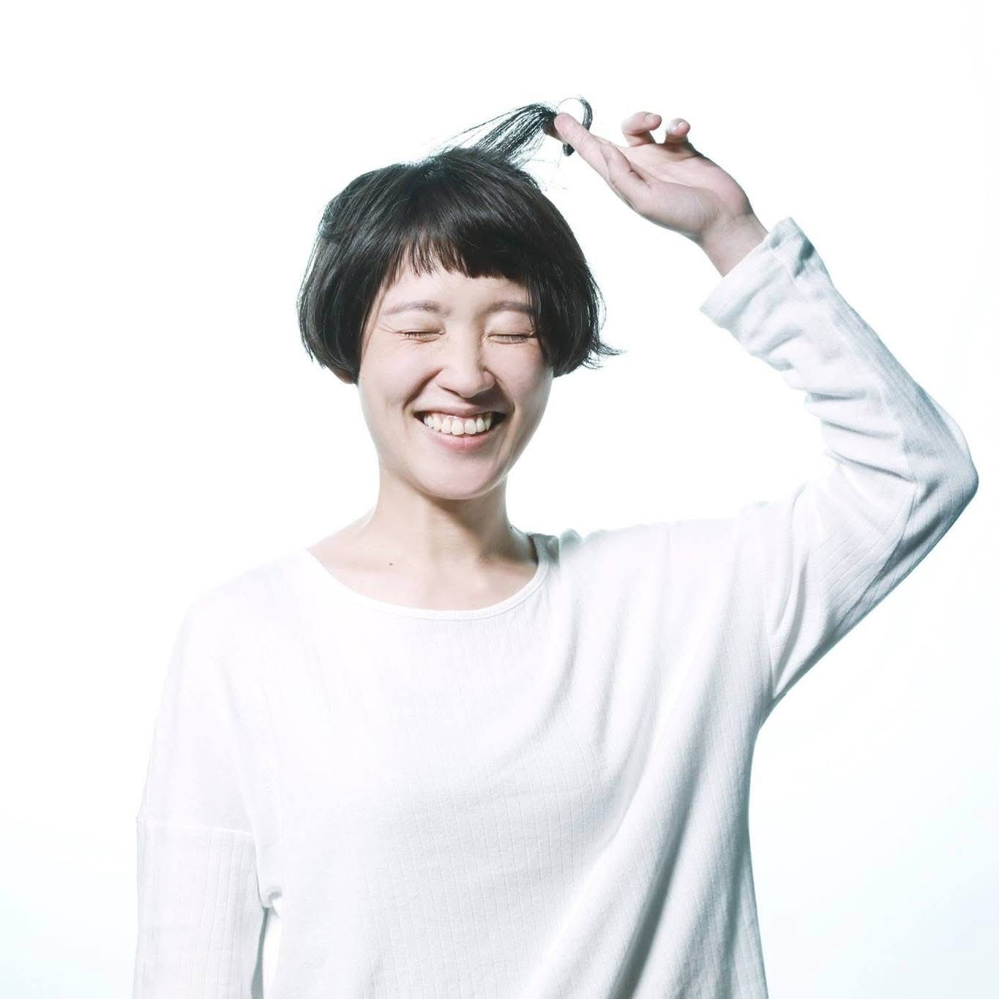

資深產品設計師，但工作方式比「設計」更廣。近五年在 hidol 獨立負責核心功能模組，從模糊需求拆出真痛點、翻譯成可評估的目標，再用數據判斷上線後該優化還是收手——一條從問題到落地的閉環，同時用上產品規劃與設計兩種思考。社會學底子讓我從人和情境理解問題，五年前端讓我與工程語言互通；跨職能協作是日常，最近半年也用 AI 把設計、原型、實作串成單人能跑完的流程。
主要負責產品為 hidol（偶像／粉絲互動社群平台），跨 Web 與 App 兩端。從前端切版起步，逐步擴展到完整的 UX 流程設計與跨職能溝通；後期以資深產品設計師角色，獨立負責 hidol 多個核心功能模組的概念、設計、開發溝通到上線追蹤，並支援設計內部的方法整理（design system、訪談洞察）與營運廣宣協作。
五年時間負責多家客戶的活動網站、品牌官網、行銷專頁的視覺切版與互動實作（HTML / CSS / JavaScript）。從接設計稿到上線交付一手包辦，跨設計、開發、業務、客戶四方溝通，培養出對「設計能不能被實作」的直覺——這也是後來轉做產品設計時最直接受用的本錢。
宏林跨媒體整合行銷 · 行銷企劃專員（2013–2014）／就是愛創意 · 行銷企劃專員（2012–2013）／三重社區大學 · 課程企劃專員（2010–2012）。四年跨行銷、電商、教育的企劃經驗，打下與業務、客戶、學員溝通的底子，也是後來能把營運需求快速轉成設計命題的源頭。
100% 由我規劃的版本。因應策略從 IP 帶 C 轉型為 C 帶 C，整條故事用 Moment 為核心串起價值主張「你的熱愛值得被紀錄」。從最抽象的策略指令出發，獨立完成：目標客群（15–25 歲 Gen Z）、主要場景（紀錄你的當下喜愛）、關鍵功能與故事流程（觀看 → 喜愛觸發行動 → 散播喜愛）、回扣最小關鍵指標（點擊查看詳細頁）。
起點是模糊的需求：「發文好擠東西擺不下、icon 看不懂，能不能順便優化？」我沒接這個框架，先拆下去——發現真正問題是「發文模組不斷擴充、版面擴充性不足」，原本提出的「用戶學習成本高」當時證據不足，是假議題。改從「用戶慣用發文模組 vs 特色模組」的方向切入。
產品策略 IP 帶 C 時期，目標激起用戶更多互動。負責把「圖片標註」這個概念收斂成可落地的設計，定義成功指標為「點擊查看 Spotlight」與「留言互動」，上線後持續追蹤。
目前設計工作中已導入 AI 協作——例如轉場動態、動效原型生成。以往這類工作需要自己手刻 prototype 且不確定能否被開發實踐，改用 AI 後大部分時間花在 tune prompt，但整體比自己串 prototype 減少將近一半時間。個人專案中也持續實驗：假日用 Figma Make 結合 Bolt 做一支給自己用的勾毛線專用 App，跨設計工具與 to-code 工具的端到端 AI 工作流驗證。
定位為「不同於以往的全新紀錄體驗」，負責 Moment 新增與編輯流程。上線後主動拆解漏斗，找出首頁→紀錄起始頁轉化偏低、拍照→匯入照片到編輯頁流失近半等關鍵問題點，作為下一輪優化依據。
從「用戶關注用戶以自主獲取優質內容」的命題出發，獨立負責設計，與 PM 緊密合作。
與另一位設計師共同完成 hidol Web 訪客模式版本，負責探索、我的、通知、全域交互四個模塊。Web 版的策略目標是讓內容更容易被擴散、降低入坑門檻。同期建立 hidol Web Design System，協助後續設計與開發共用一致的元件規範。
兩個皆為從點子被選中後的收整、萃取與設計轉化——分別探索用「心理測驗」建立粉絲與偶像連結（嗨豆感應器），以及用「共創」凝聚粉絲、強化偶像連結（共創應援卡）。完成完整概念設計與內部 Demo 後，因解法路徑與當時量能不對等，主動踩煞車不上線——協助組織判斷投入與否，避免硬上的長期成本。
設計管理員端的檢舉審核流程，協助減輕產品端內容審控成本、提升社群自治能力；同步從「檔案上傳的等待感」這個小體驗痛點切入，導入 Progress Bar 並定義其使用時機，改善用戶等待時的焦慮感。
整理三位個站應援者訪談、提煉洞察並進行內部分享；以設計協助營運與招募溝通（hidol 徵才廣宣、新手任務 Event Page、創作者關鍵回顧 EDM）；將法務需求落地為產品端的合規體驗（條款更新提醒）。